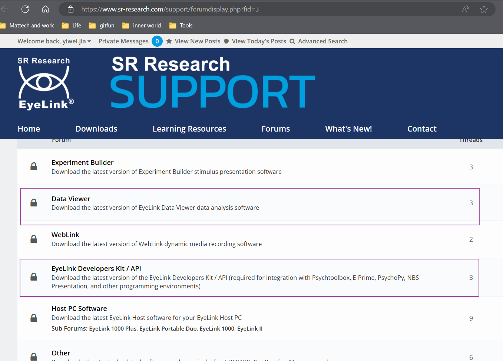
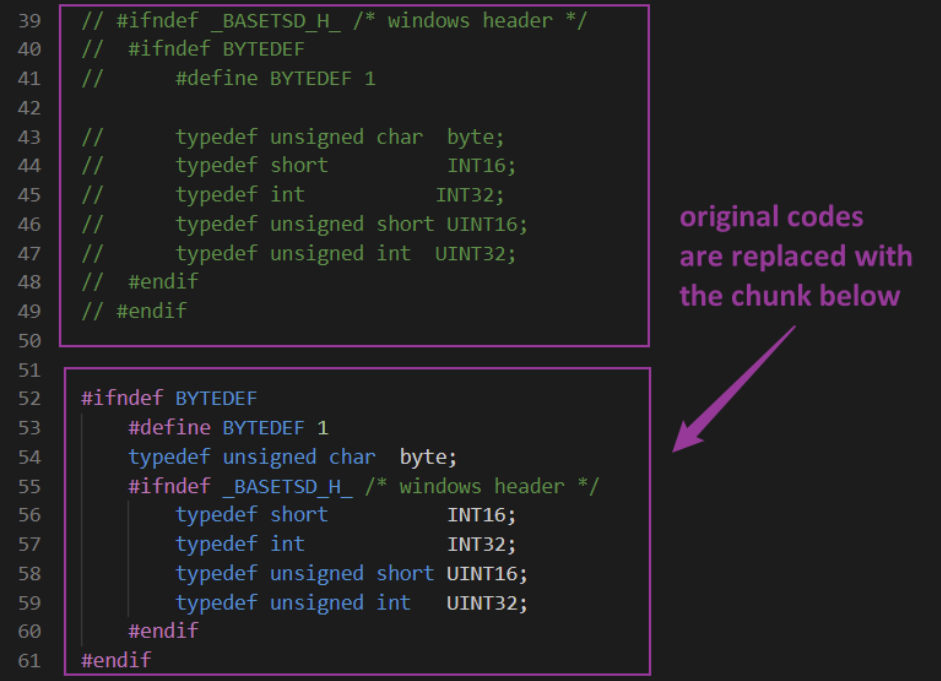

Software installation
1 EyeLink Installation¶
- The EyeLink MUST be installed before PyEDFRead and Pychopy.
- Register a new account for downloading the EyeLink Developers Kits. Link for installation.
- The activation of the new account might take up for 24 hours.
- Install the EyeLink Developer Kit and EyeLink Data Viewer following the instructions. 
2 Additional Steps¶
2.1 For Windows Platform¶
- Ensure you have installed the Microsoft C++ Build Tools.
- You can download them from the Visual Studio website.
- Make sure to select the "Desktop development with C++" workload during the installation.
- Properly set up the environment variable:
- For example on Windows system
- Modify the files in the directory of EyeLink for supporting Windows
- Edit edftypes.h in the dir: C:\Program Files (x86)\SR Research\EyeLink\Includes\eyelink 
2.2 For Mac Platform¶
Install the EyeLink Developer Kit and EyeLink Data Viewer following the instructions on the website.
2.3 For Linux Platform¶
This part is derived from HCPH SOP. Since we did not work on eye tracking data with Linux system, we refer to the HCPH SOP for completeness. - Enable Canonical's universe repository with the following command:
- Install and update the ca-certificates package: - Add the SR Research Software Repository signing key:curl -sS https://apt.sr-research.com/SRResearch_key | gpg --dearmor | sudo tee /etc/apt/trusted.gpg.d/sr-research.gpg
3 Virtual Environment Preparation¶
-
Prepare conda virtual env, with python version above 3.7. Some unexpected issues will occur if the python version=3.6 or below.
-
Install pyedfread from the original repo: